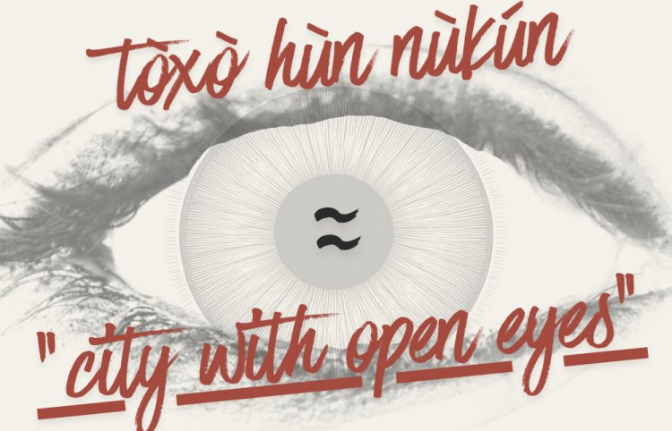

People and Places Index · Indice des Personnes et des Lieux
Ten questions before the document leaves the desk.
PPI is a quick re-reading tool. It checks whether a text protects human dignity, makes burdens and risks visible, and leads to a clear human-centred decision.
Use it on a policy brief, a report, a strategy, a plan, a curriculum, a project proposal, or a governmental action plan. It came out of doctoral work on human-centred urbanisation, and out of a simple worry: documents written fast can lose the people they are about.
- List what should be considered.
- Cite one line of evidence from the text — a phrase that already does it, or that fails to.
- Rewrite the paragraph by naming actors, burdens and risks, and the decision that must be taken.
- Then ask what is present, what is missing, and what is unclear.
Five minutes is enough for one paragraph: an objective, a recommendation, or a summary. If you cannot rewrite it faithfully because information is missing, write a best-guess version and note what would be needed to make it accurate.
-
01
Whose life and dignity are at stake?
Does the document name the people affected and specify what is at stake for them?
-
02
What “good” is being pursued… concretely?
Is “good” defined in lived terms — safety, health, time, access, belonging, care, protection — and not only in abstract goals?
-
03
Where is the human in the causal chain?
Does the text show how actions change daily life, and not only activities or outputs? A rebuilt road can be told as good for everyone. The neighbours of that road do not always tell it that way.
-
04
Who carries the burden, and who carries the risk?
Does the document name who “pays” in time, money, exposure, displacement, surveillance, stigma, or loss — even when overall outcomes look, and might actually be, positive?
-
05
Who has voice, and when does voice become power?
Is participation described as decision influence — what changed because people spoke — and not only as consultation?
-
06
Does it recognize layered belonging and real social life?
Are people treated as isolated units, or as belonging to a whole? Is there room for multiple affiliations, mobility, and the interdependence of household and community — people formed in relation?
-
07
Is language respectful, not sanitizing?
Are there a lot of euphemisms — “clean-up,” “beautification,” “optimization,” “revitalization” — without consequences?
-
08
Are actors accountable in the sentences?
When harm, exclusion, or displacement is possible, are actors named — who does what to whom — rather than hidden behind thick professional language?
-
09
Is the place treated as specific, not universal?
Does the text acknowledge local practices, constraints, histories, and ecological realities, rather than importing a model as if it fits everywhere?
-
10
Does it end in action, not only knowledge?
Are responsibilities, decisions, timelines, and next steps explicit — and aligned to the dignity threshold?
Paragraph review
Send one paragraph.
I can apply the Index and show what a rewrite looks like: what is present, what is missing, what is unclear. Subject line: PPI paragraph review. Include what the document is for, who it is for, and the deadline.